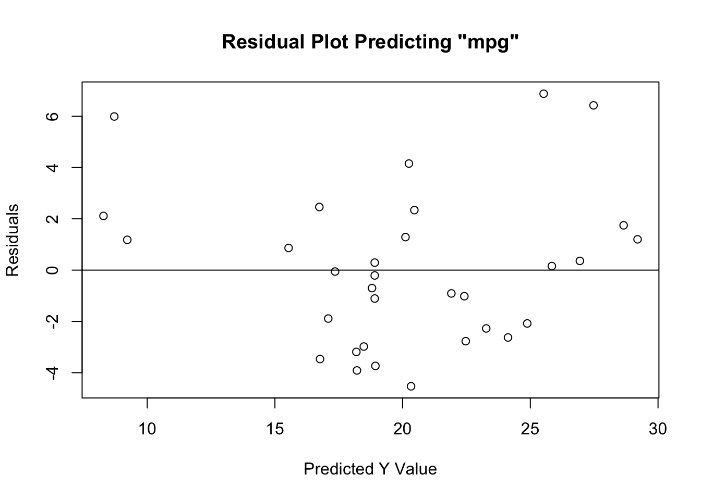

OLS Regression
Can we predict/explain variation in car fuel economy
(mpg) from the combination of its weight
(wt) and whether it has a manual or automatic
transmission (am)?
Here, we’ll be working from the mtcars data set, to examine the
relationship between a car’s weight (wt:
measured in thousands of pounds) and its fuel economy
(mpg: measured in miles per gallon).
What is the Regression?
The OLS regression examines the predictive relationship between some independent variable(s), and an interval-ratio dependent variable. The test tells us about the effect (slope) of any independent (X) variable on an interval-ratio dependent (Y) variable. In particular, the regression equation looks at how values of an x variable “predict” a specific Y value.
Here, we’ll look at a multiple (multivariate OLS) regression for the mtcars data, with miles per gallon (mpg) as the DV, car weigh (wt) as IV1 and whether or not the car has an automatic transmission (at) as IV2.
Assumptions and Diagnostics for Regression
The assumptions for the regression are…
- Adequate Sample Size
- Absence of Outliers
- Absence of Multicollinearity and Singluarity
- Linearity, Normality, and Homoscedasticity (Homogeneity of Variance)
In addition, the previously-discussed assumptions for other tests (independence of observations) is implied, since all of these bivariate tests require random samples. Beyond this, the OLS regression requires an interval-ratio outcome variable.
1. Adequate Sample Size
- According to Green (1991), as cited in Tabachnick and Fidel (2006), adequate sample size is determined by the modified equation \(N \geq 50 + 8(k)\)
Where \(k\) is the number of independent variables included in the regression model.
- Given that we have two IVs/predictor
variables, the minimum number of cases to be adequate is 66 (\(66 = 50 + 8(2)\)). Therefore, with only 32
observations in the
mtcarsdata set, we do not have enough cases to adequately run the regression model. That is,we have violated (not met) the assumption of adequate sample size. I would advise not proceeding with the regression model, however, given that this is an example, I will proceed.
2. Absence of Outliers
To identify outliers, simply look at the boxplots for each variable in the model (Y and all Xs) to see “how outlying, these outliers are.” In most cases, outliers should remain in the data. Need strong justification for removing outlying cases.


- We can see from the boxplots that the
distributions of the variables are relatively normal. Interestingly, the
boxplot for the weight variable has some issues: the median is closer to
the 75th percentile, and the upper whisker (right tail) of the
distribution for weight variable has some outliers, implying a longer
right tail. While we might consider removing these outlying cases, we
would need to do so statistically (considering how outlying an
outlier is)… which is beyond the scope of this class. Moreover, because
there are so few cases in the data set (\(N =
32\)), I would not consider removing cases, as doing so would
drastically alter estimation (e.g. \(\bar{X}\), etc.). The boxplot for the ‘am’
variable (whether or not a car has a manual transmission) has some
issues. This is to be expected: because the variable is measured as 0
(automatic) and 1 (manual), cases can only be the values 0 or 1 –
nothing in between. This is why we see the median line at the bottom of
the box, and why there are no whiskers. Keep this in mind for when you
have dichotomous/categorical variables in a regression model. Taken
together,
these data represent a relative absence of outliers.
3. Multicollinearity and Singularity
Multicollinearity: Independent variables (more) highly correlated with one another (compared to their correlation with the DV).
- Check the correlation matrix for variables.
## mpg wt am
## mpg 1
## wt -0.87 1
## am 0.6 -0.69 1- We can see from the correlation matrix that
none of the bivariate relationships between the independent variables
(
wtandam) are above a correlation coefficient of \(r \approx .90\). Therefore,we have met the assumption of absence of multicollinearity.
Singularity: If independent variables included are (together) all possible subsets of measure also included in model. For example, if you have a xenophobia scale… based on 4 different questions (the sum of the scale is a “total xenophobia” scale)… and you include all 4 questions in the regression model, AND you include the total scale (the sum of the 4 questions) in the model. There will be so much overlap in the total scale, and the 4 items, that all of them would appear in the regression model with no coefficients… no \(b\) values…
- Look at the items and determine if they are subsets of other items also included.
- Based on the data,
wtandamare not subsets of one another. Therefore,we have met the assumption of absence of singularity.
1. Linearity, Normality, and Homoskedasticity
- Linearity: Variables move together in a linear fashion.
- Normality: Variables are normally-distributed.
- Homoskedasticity: Homogeneity of Variance - Variance of variables
are similar (10:1, 3:1 for SDs).
- Visual inspection of Residuals Plot to see if relationship is linear, normal, and similar variances. Plot should have points that extend beyond both sides of the 0 line (normality), should not have a U or inverted-U shape in the points (linearity), and it should not have a funnel shape, where points are tightly clustered near the 0 line at one end of the plot, and completely dispersed along y-axis at other end of plot (homoskedasticity).
In the past, you may have been instructed to use the Shapiro-Wilk test to assess normality. This is wrong. Unfortunately, tests such as these are overly-sensitive to trivial deviations from normality, and may result in you believing you must correct for normality by transforming your data. Please do not do this. OLS regression is robust enough to provide results even in the presence of data that are not fully normally-distributed. You may have also been instructed to use the Levene’s test to assess the degree of similarity in variances across groups. Similarly, this test is overly-sensitive to trivial deviations from homogeneity of variance. It is a better practice to assess all three (linearity, normality, and homoskedasticity) using a Residuals Plot.

- Based on the residuals plot (the difference
between the actual \(Y\) and the \(\hat{Y}\)), we see that
we have met the assumptions of linearity, normality, and homoskedasticity. Linearity is met given that the residuals do not exhibit a non-linear (e.g. curvilinear) relationship about the 0 distance (from \(\hat{Y}\)) line. Normality is met given that the residuals do not have a hard stop on either side of the line – that is, they are evenly distributed about the 0 distance (from \(\hat{Y}\)) line. Finally, homoskedasticity is met given that the residuals are evenly distanced from the 0 distance (from \(\hat{Y}\)) line at all values of \(\hat{Y}\) – as exemplified the lack of “fanning out” on one end.
### The Regression Calculation
The calculation for the Regression is:
\(\hat{Y} = b_0 + b_1X_1 + b_2X_2\)
Where…
- \(\hat{Y}\) is the predicted Y value for the combination of slopes for X values
- \(b_0\) is the intercept
- \(b_1\) is the slope associated with \(X_1\)
- \(b_2\) is the slope associated with \(X_2\)
- \(X_1\) is a specific value for the first \(X\) variable that you can plug in for a specific case
- \(X_2\) is a specific value for the second \(X\) variable that you can plug in for a specific case
Running the Regression
For Regression, within the lm function, which stands for
linear model, the dependent variable is listed first and the
independent variable is listed second.
This may seem confusing, so it’s best to wrap our lm function in a summary call…
##
## Call:
## lm(formula = mpg ~ wt + am, data = data1)
##
## Residuals:
## Min 1Q Median 3Q Max
## -4.5295 -2.3619 -0.1317 1.4025 6.8782
##
## Coefficients:
## Estimate Std. Error t value Pr(>|t|)
## (Intercept) 37.32155 3.05464 12.218 5.84e-13 ***
## wt -5.35281 0.78824 -6.791 1.87e-07 ***
## am -0.02362 1.54565 -0.015 0.988
## ---
## Signif. codes: 0 '***' 0.001 '**' 0.01 '*' 0.05 '.' 0.1 ' ' 1
##
## Residual standard error: 3.098 on 29 degrees of freedom
## Multiple R-squared: 0.7528, Adjusted R-squared: 0.7358
## F-statistic: 44.17 on 2 and 29 DF, p-value: 1.579e-09To interpret the findings, we report the following information:
The test used
The variables used in the full model
For significant variables, how a variable’s slope affects the outcome
The amount of variance in the outcome explained by the combination of IVs.
- In the output above, using an OLS
regression, we see the Y-intercept (or mean MPG) is an MPG value of
37.32. In addition, we see that the b for the wt variable is significant
and negatively related to MPG, such that, for every 1-unit (however it
is measured) increase in weight of a car, there is a 5.353-unit
decrease in miles per gallon of a car. In addition, whether or
not a car has an automatic transmission is unrelated to MPG.
We also see that this model is significantly better than the null model (with no predictors), as indicated by the omnibus F test: \(F(2,29) = 44.17, p\lt.05\).
Finally, for this full model, which predicts miles per gallon from the weight of a car whether or not it is automatic transmission, the model fit statistic, the \(R^2\), is .7528. This indicates that 75.28 percent of the variation in a car’s fuel economy (mpg) is explained by the combination of it’s weight (wt) and whether or not it runs on a manual transmission (am).
- In the output above, using an OLS
regression, we see the Y-intercept (or mean MPG) is an MPG value of
37.32. In addition, we see that the b for the wt variable is significant
and negatively related to MPG, such that, for every 1-unit (however it
is measured) increase in weight of a car, there is a 5.353-unit
decrease in miles per gallon of a car. In addition, whether or
not a car has an automatic transmission is unrelated to MPG.